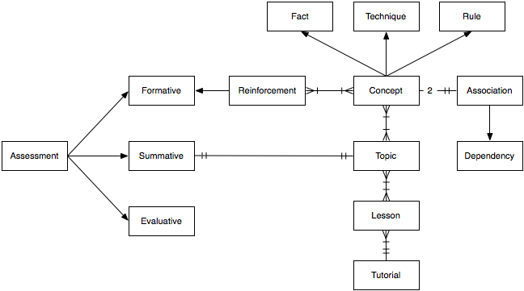

A concept is an atom of learning. It can be a fact (e.g., what a call stack is), a technique (e.g., how to pass parameters to a function), or a rule (e.g., when to copy data).
An association is any connection between two concepts. Obviously, all concepts in a topic should be strongly associated.
A dependency is a prerequisite association between two concepts. Circular dependencies may exist (you can't understand A unless you understand B, which depends on C, which in turn depends on A), but we'll work hard to avoid such cycles, since every particular learner encounters concepts in some sequential order.
A topic is a set of related concepts; for example, the topics "Parameters" includes all of the concepts described above. A concept may be part of several topics, but for learning purposes, we would like its first appearance for an individual learner to be gentler than subsequent appearances for that same learner.
A lesson is an atom of teaching. It will typically comprise a small number (1-4) of closed-related concepts, and be a few minutes long. Where possible, it should be followed immediately by some kind of reinforcement (discussed below). A concept may appear in several lessons (same idea, different contexts).
A tutorial is a specific sequence of lessons on related topics; for example, the tutorial "Functions" would include lessons on parameters, returning values, and so on. Tutorials aren't strictly necessary for free-range learners—they can go through lessons in any order that respects dependencies—but we must define them:
to give learners like Zuzel the larger narrative arcs they need (learners like Xanthe only need lessons); and
to give instructors like Tahura, who are working in traditional classroom settings, guidance on how to fill an hour-long lecture.
Reinforcement is something done to help people absorb a concept, such as further examples, class discussion, quizzes, or exercises. All four are problematic:
Further examples are based on guesses of what learners might not have understood correctly; such guesses are often wrong.
Class discussion is hard to implement for asynchronous, self-directed learners.
Multiple choice quizzes can mislead or frustrate learners (most questions have more than one right answer), or fail to clear up learners' misconceptions ("You're wrong, but I won't tell you why").
Long-answer quizzes and exercises require a human assessor's attention (which is also hard to implement for asynchronous learners).
Assessmentis anything done to determine how well something else has been done. "How well" is important: assessment will not always (or even usually) be black-and-white. Specific kinds are:
formative assessment, which provides short-term diagnostic feedback to learners and teachers;
summative assessment, which demonstrates attainment of some level; and
evaluative assessment, which tell us how well the teaching is working.
Formative assessment is a kind of reinforcement; summative and evaluative are (usually) not.
The diagram below shows these relationships. I've drawn most relationships as many-to-many, but in practice, we hope that most will actually be one-to-many, i.e., that concepts will fit neatly into topics, and topics into lessons. The one-to-one relationship between summative assessments and topics is also a bit misleading: what it's meant to imply is that any particular learner will eventually demonstrate mastery of some topic (e.g., Yeleina will show that she understands functions). This is the smallest "chunk" for which we'd contemplate awarding a badge, though as discussed earlier, we're going to start with something coarser-grained.

Originally posted 2012-01-29 by Greg Wilson in Content, Education.